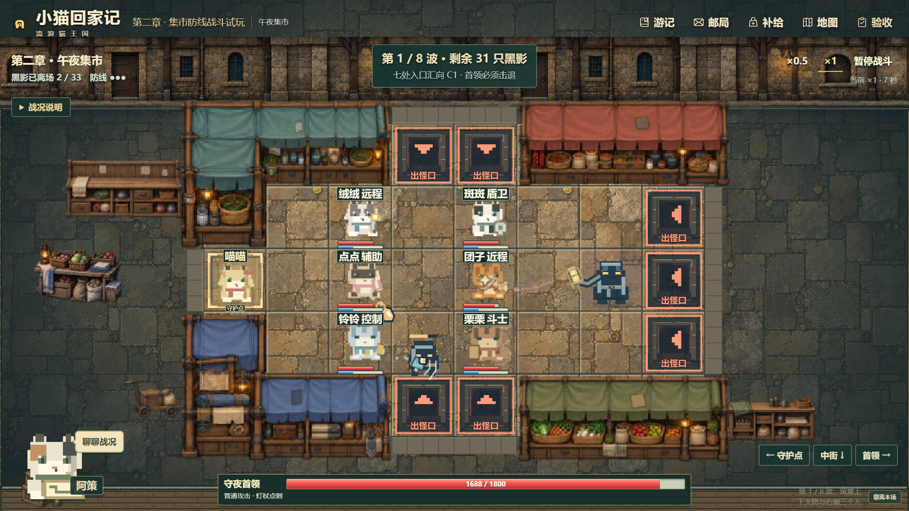

Real-Time Tactical Tower Defense
FROM RANDOM EVENTS→BATTLE PRESSURE + SUPPORT

REPOSITION · SEPARATE TAKE · 1×
Build EnergyAbilities charge automatically
Activate SkillsTrigger each cat's ability
绒绒 / Rongrong星绒绽放 — Star BurstCross-shaped area attack
斑斑 / Banban罐盖护盾 — ShieldTemporary self-shield
点点 / Diandian安心呼噜 — Healing PurrHeals active companions